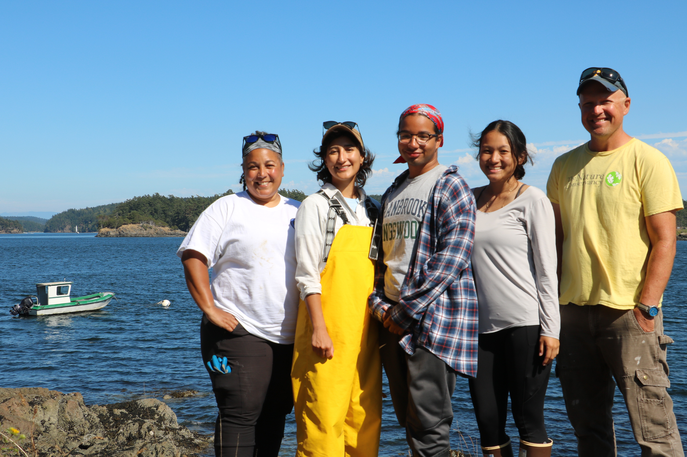

Long Term Intertidal Monitoring on Yellow Island.
A Black In Marine Science x The Nature Conservancy Program
The impacts of anthropogenic activities on natural environments are growing ever more complex and far-reaching. Moreover, the impacts can be more pervasive and yet go unnoticed in aquatic habitats like marine intertidal environments. Long-term monitoring programs provide an opportunity to examine the (changing) relationship between organisms and their habitats to better inform our understanding of the interplay between biotic and abiotic conditions. This is the second year of the Yellow Island Monitoring project and the first full season of data collection.
The Yellow Island project focus is on (1) understanding the island’s ecology using observation, molecular techniques, and the synthesis of multi-source data, and (2) understanding the interconnectedness of the Salish Sea ecosystem and the foundational changes induced by human activities and climate change. Students worked onsite at Yellow Island and in the lab at Friday harbor Labs collecting qualitative and quantitative data that can help us answer questions of intertidal community composition, food web dynamics, predator prey interactions, and physiological trade-offs in the face of a changing climate.
Program Development
The program was created by a collaboration led by University of Washington graduate student Chris Mantegna. The primary program sponsor (support) is Black In Marine Science (BIMS), helmed by CEO Dr. Tiara Moore and BIMS Chief Science Officer Dr. Camille Gaynus. The program partner is The Nature Conservancy (TNC) with on-site co-mentor and Yellow Island Land Steward Matt Axling.
Working together we identified a need for immediate and long- term data of the marine environment for TNC, the managers of Yellow Island. TNC would reciprocate by providing access to the island to scholars to learn ecological field methods safely and without interference. Yellow Island is an 11 acre island that will take personnel to support survey efforts. Partnering with the Doris Duke Conservation Scholars Program and the Friday Harbor Labs REU program an 8- week program that can support providing a snapshot in time of health of the Salish Sea by meeting the following goals:
Ecology - Using observation, molecular techniques, and the synthesis of multi-source data
Conservation - Salish Sea ecosystem and the changes induced by human activities
Community - Increasing environmental literacy skills in a safe field site while supporting community driven questions
Click on the cohort year to see what they accomplished over their summer internship.
| 2022 Cohort | 2023 Cohort |
|---|---|
|  |  |
| 2022 DDCSP Scholars with program mentors. From left to right, Chris Mantegna, Angel Quimbita, Luna Peralta, Taylor Umetsu, and Matt Axling. | 2023 DDCSP and REU Scholars with program mentors. From left to right, Chris Mantegna, Carley Bishop, Logan Evans, Kamryn You Mak, Coira Williams, and Matt Axling |